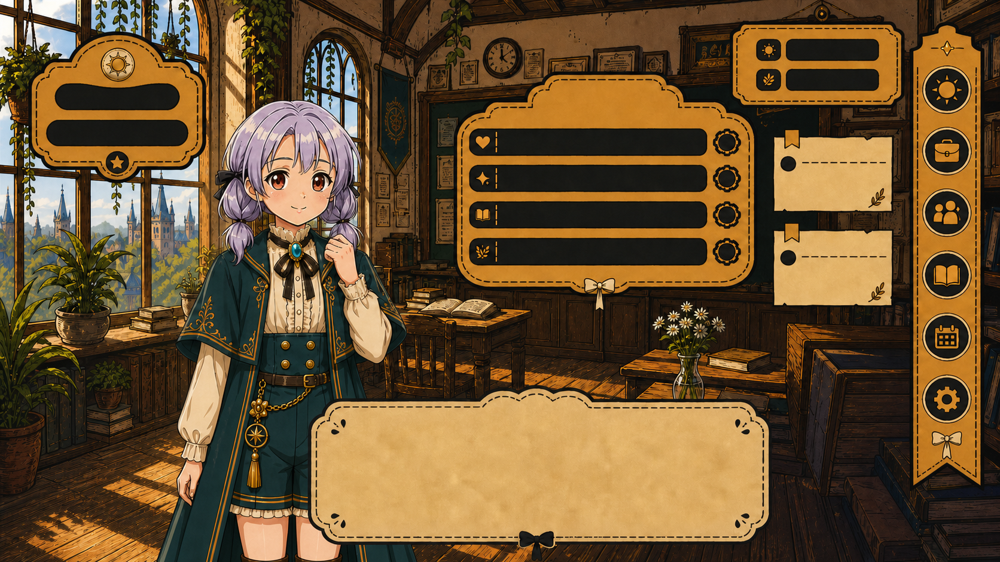
Year 1 / Beginning Spring
Arrival and basic routine
Solaris reaches Ailmoor, meets her first companions, learns how scheduling works, and watches the early festivals before she is ready to compete in them.
Cross-platform interactive narrative
A single-player life simulation set in Ailmoor, a magical city rebuilt after a war between humans and Fiends. The player guides Solaris through six in-game years, scheduling her classes, jobs, and rest in half-month turns, and those daily decisions settle who she becomes and how five species end up sharing the city.
World
Ailmoor sits in Nawlore, a parallel-world nation where a long war between humans and invading Fiends ended in an enforced, uneasy peace. That peace is already settled when Solaris arrives. What the player shapes is how she lives inside it.
Solaris arrives from the small town of Ylabelle with three companion creatures and almost no money, treated by the city as a student and an outsider at once. She can attend classes, take jobs, rest, hunt, and enter competitions. A few districts stay locked until her attributes, relationships, and past choices line up to open them.
The map is uneven on purpose. Snow-white stone streets, old imperial buildings, civic academies, abandoned wartime ruins, and fog-covered "ghost areas" all share one navigation space, so the war the city survived stays visible in the streets Solaris walks every day.
Her ordinary schedule adds up. It shapes her health and looks, her morality, which people and places accept her, how much magic she can handle, and, by the final year, the future each species pictures for Ailmoor.

Systems
Classes, work, rest, hunting, festivals, friendships, and creature care all feed seventeen tracked attributes, so routine scheduling is where Solaris actually takes shape.
The player plans her life in half-month rounds. Each choice moves both shown and hidden values, and those values decide who trusts her, which places let her in, which jobs she qualifies for, and which of the thirty-plus endings are still reachable. No single schedule is the right one; several very different runs all hold together.
A companion-creature system runs alongside this. Solaris's three starting creatures need feeding, mood care, and battle preparation across all six years. More can be rescued or adopted later, and the Dark Avenue path can mutate them through dormant magical bloodlines.
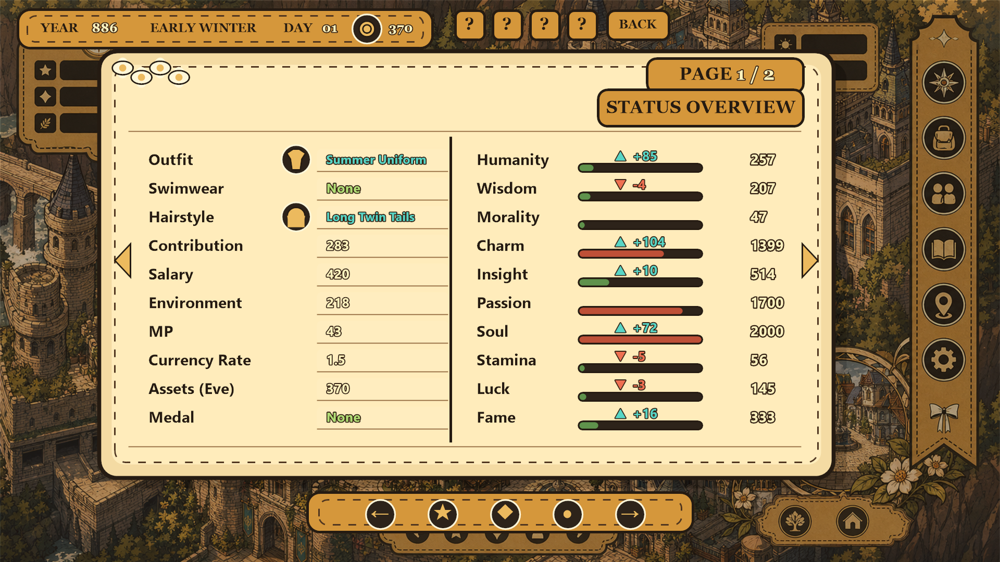
Narrative Arc
One playthrough cannot reach everything. A finished run can still miss whole friendship arcs, hidden items, the Dark Avenue conditions, and several of the future-trend endings.

Solaris reaches Ailmoor, meets her first companions, learns how scheduling works, and watches the early festivals before she is ready to compete in them.
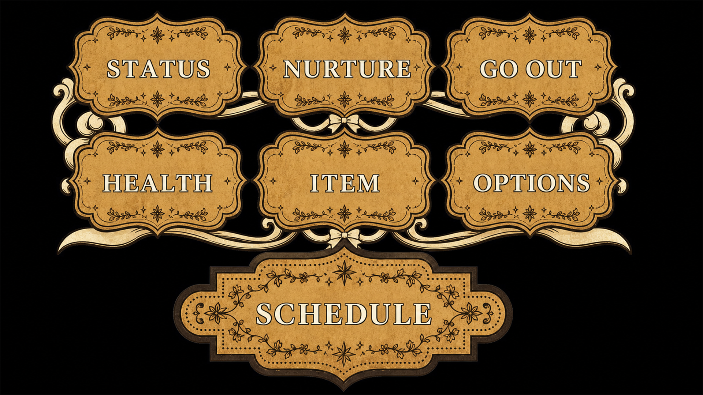
More companion stories unlock, professional courses open, hunting missions become available, and Dark Avenue can be reached for the first time.
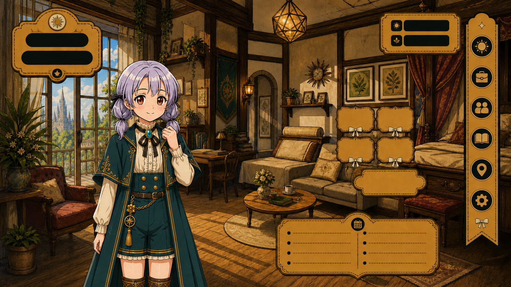
Magic creation, rare creatures, player-run businesses, full Dark Regions access, and the ending conditions all come together.
Ailmoor takes for granted that five species can share a city. The question it keeps asking is what that sharing costs each of them, in habits, friendships, and the small choices of an ordinary week. From the Ailmoor City project treatment, 2021
Visual Direction
The current visual pass gives Ailmoor a settled look: ornate buttons, painterly interiors, isometric civic spaces, and panels built from one gold-and-botanical frame, so any screenshot clearly comes from the same city.
Visual development in this pre-production phase combines hand-drawn design, interface design, and AI-assisted concept exploration under the author's art direction. Several concept images on this page are AI-assisted. Final in-game assets are being produced in the current 2D phase.

The cover sets the project's look before play begins. A symmetrical celestial frame, botanical ornament, restrained gold, and a lotus emblem place Ailmoor somewhere between an illustrated civic archive and a personal magical diary: ceremonial, but still warm enough for a character-led story.

Save and load look like objects from the setting. Scalloped edges, ribbon details, warm parchment, and dark inset fields keep a clear hierarchy and make even an admin screen feel part of Ailmoor.

Loading and story-transition screens slow the pace between dense management states. Botanical borders, soft illustration, and a simple progress indicator hold continuity and give the player a short breather between locations and events.

The key visual sets Solaris close against Ailmoor's architecture, part of the same frame. Her silhouette, the buildings, and the palette all say the same thing: her private choices and the city's condition move together, and each one changes how she can travel through it.
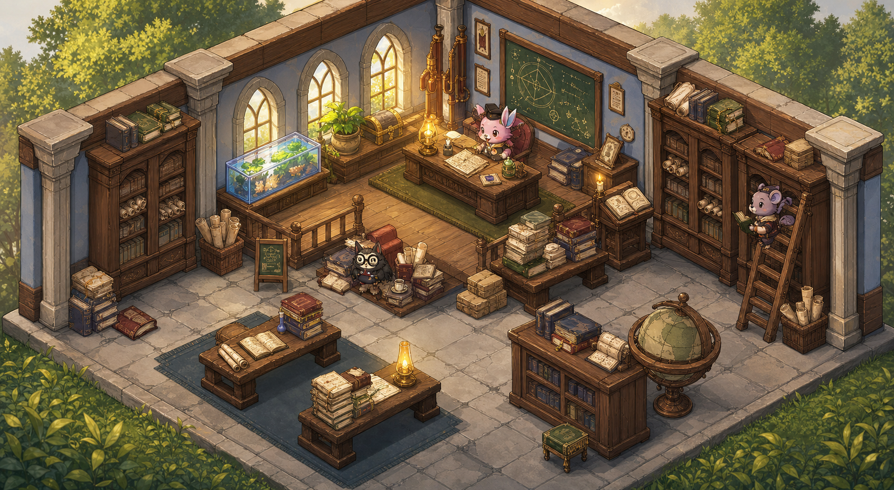
The classroom shows how study, conversation, and skill growth can share one clear space. Furniture gives navigation landmarks, windows and warm timber add depth, and the isometric angle leaves room for dialogue and system overlays without turning the room into a menu.
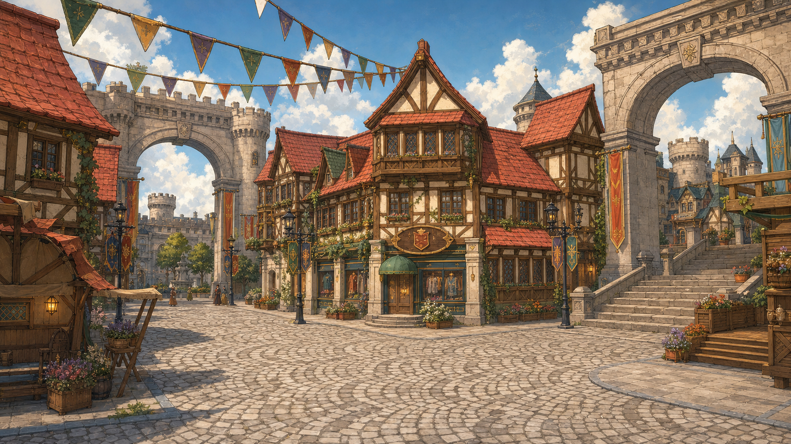
The festival square scales the same look up to a crowd. Calendar progress turns into a visible celebration, and the festivals double as checkpoints for relationships, reputation, and access, so a public event is also a place where the player's earlier choices pay off.
Story Life
The prototype pairs long-term cultivation with storybook moments. Seasonal outings, friendships, creatures, and quiet discoveries give weight to the values Solaris builds up through the schedule.


Character System
Wardrobe choices sit alongside attributes, money, study, work, and relationships. Variants preserve a recognizable silhouette while expressing profession, status, taste, and the route the player is building.
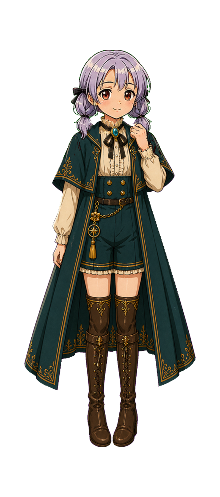
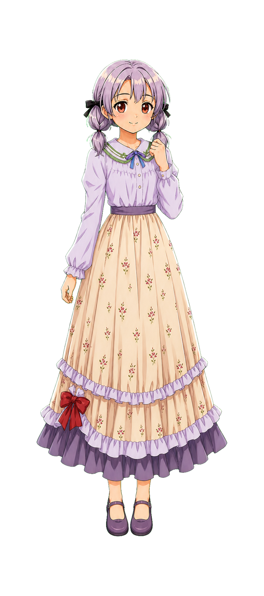
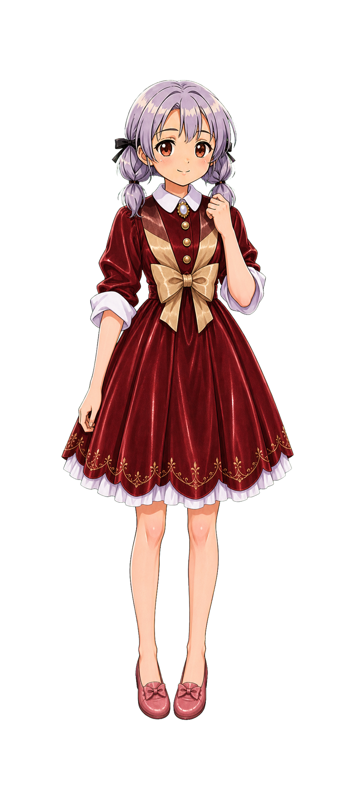
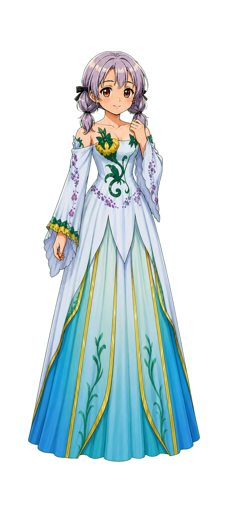
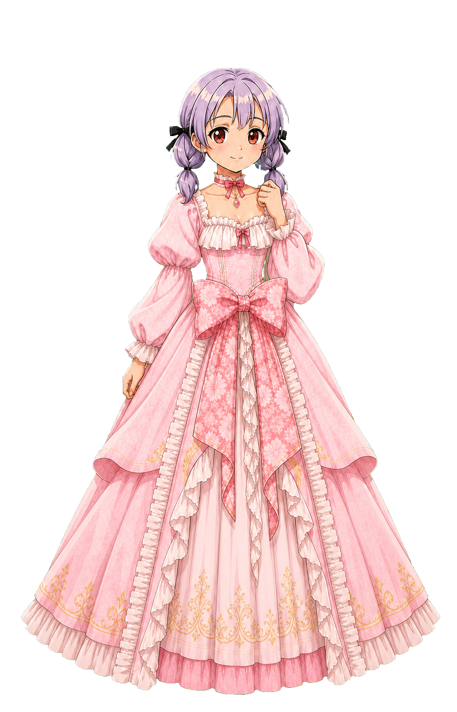
Interface
The A11 interface material sets a repeatable screen layout: a calendar panel, gameplay field, operation menu, status bars, pet status, a shortcut rail, and modal panels that all reuse the same ornament.
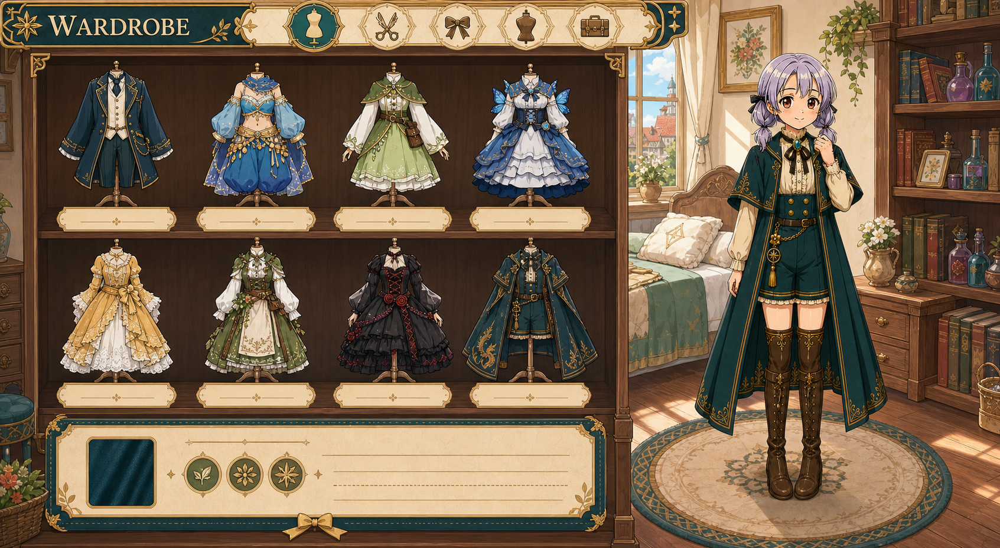
The prototype keeps screen regions stable, so the player scans the same spots for time, goals, companion state, money, guide access, and schedule commands. That matters in a life simulation, because these screens come back hundreds of times over a full run.
Buttons carry the scalloped frame from the main menu and the save/load overlays. The style is decorative, but the hierarchy stays practical: primary commands sit in fixed clusters, status panels use the same slots each time, and long-term progress stays readable at a glance.
Development
The project has moved beyond exploratory concepting. The world, system architecture, narrative branching, and current visual identity are established; the active work is production-grade 2D assets and engine-side preparation.
78-page prototype document completed and deposited under copyright, setting out the city, species, six-year arc, attributes, cast, and endings.
First character-design and world-building moodboards, species silhouettes, district concepts, interiors, and street references.
Branching dialogue, ending-condition tuning, companion-creature prototypes, friendship logic, and Dark Avenue gating were refined.
Cover frame, classroom dialogue, civic map, status UI, main menu, shop interface, room interface, and loading UI established the production look.
Production-grade UI screens, in-game 2D character and environment art, dialogue-system visuals, and front-end flow assembly are in progress.
Release Path
The next production milestone is an engine-side vertical slice covering Year 1 content, two companion NPCs, the live cultivation system, companion-creature mechanics, and the first wilderness battle map.